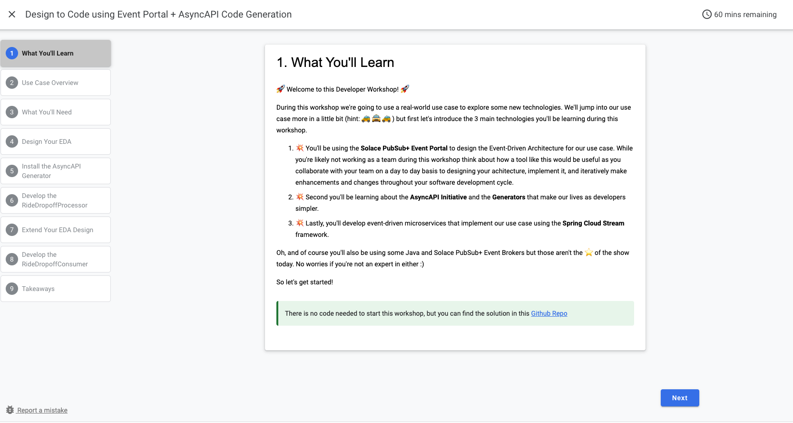

Are you trying to create easy to use, visually appealing content for the tech community? This Codelab will show you how to quickly create your own Google Codelab just like the one you're using right now.
We'll be authoring the codelabs using markdown format. This gives us the flexibility of using our markdown file for other things and also storing it in our github repo with any code that might be used for a tutorial.
Here is an example image of another Codelab that I created: 
You can also watch a video on how you can contribute to authoring a codelab by visiting this YouTube link or watching the video below
In order to create a Codelab you need
You have two options to download the dependencies:
$ brew install go
Below is what I set on mac, but instructions are here for other OS options
$ export GOPATH=$HOME/Go
$ export GOROOT=/usr/local/opt/go/libexec
$ export PATH=$PATH:$GOPATH/bin
$ export PATH=$PATH:$GOROOT/bin
Option A: from CLI using go
$ go get -u -v github.com/googlecodelabs/tools/claat
Option B: pre-compiled binary
Navigate to the Google Codelabs release page and install it from there
You should now have the claat command available to you.
$ claat
✅ Each codelab should be focused on one topic or a very small group of related topics.
✅ Use sections to separate steps for ease of navigation
✅ Include an "Overview" or "What You'll Learn Section" at the beginning of a codelab
✅ Include an "Environment Setup" or "What You'll Need Section" section that sets up the environment, if necessary.
✅ Try to make the codelab fun and engaging using images and/or gifs
✅ Provide code used in a separate public git repo
📌 Create your codelab in the Solace codelabs repo for version tracking
📌 All other code can be kept in a separate repo
📌 Example codelab markdown structure can be found on the Battleship markdown and the Battleship source code
Upon authoring of your codelab, we request you have two reviewers:
1️⃣ Technical reviewer who is knowledgeable with the content. Make sure they are tagged on github as a reviewer
2️⃣ A member of the Developer Relations team to confirm the structure of your codelab and merge it into the main github repo
✨ Now that we have the environment setup, you have two options you can follow to create your first codelab: Automated or Manual
Start by
<Your_Github_User> with your github username and <name_of_codelab> with the name of your codelabs. See note below if you do not have ssh setupgit clone git@github.com:<Your_Github_User>/solace-dev-codelabs.git
cd solace-dev-codelabs
git checkout -b add-codelab-<name_of_codelab>
Then follow one of the two options in the next two steps: Automated or Manual
./init.sh <name-of-codelab>/markdown/<name-of-codelab> directorynpm installnpm run watch. Note: This will open a tab in your browser and serve your markdown file<name-of-codelab>.md file in your text editor of choice./export.sh🚀 Go ahead to the Step 7 and add your codelabs on the main repo
Create a folder under the markdown directory with your codelab as the dir name. This is where your markdown file and related artifacts (such as images) will reside.
Go ahead and create a markdown file where you'll create the actual codelab. Please have your markdown file name match the id in the header metadata that you will set in the next subsection.
$ vim unique-codelab-identifier.md
Copy and paste the headers below into your markdown file and change the values appropriately. Guidelines are available below the sample headers.
author: Author Name
summary: Summary of your codelab that is human readable
id: unique-codelab-identifier
tags: workshop,iguide
categories: Java,Spring
environments: Web
status: Published
feedback link: A link where users can go to provide feedback (e.g. the git repo or issue page)
Metadata consists of key-value pairs of the form "key: value". Keys cannot contain colons, and separate metadata fields must be separated by blank lines. At present, values must all be on one line. All metadata must come before the title. Any arbitrary keys and values may be used; however, only the following will be understood by the renderer:
[AMQP, Boomi, Codelab, Java, JMS, Kafka, MQTT, REST, Solace, Spring]Next add your title using a single ‘#' character
# Title of codelab
Then for each section use Header 2 or ‘##' & specify an optional duration beneath for time remaining calculations Optional section times will be used to automatically total & remaining tutorial times In markdown I've found that the time is formatted hh:mm:ss
Example
## Section 1
Duration: 0:10:00
## Section 2
Duration: 0:05:00
Now that we have 2 sections to our titled codelab let's go ahead and add some content to each section. Make up your own or copy & paste the example below:
Copy into section 1 (Below Duration and above Section 2):
### Info Boxes
Plain Text followed by green & yellow info boxes
Negative
: This will appear in a yellow info box.
Positive
: This will appear in a green info box.
You created info boxes!
### Bullets
Plain Text followed by bullets
* Hello
* Codelab
* World
You created bullets!
### Numbered List
1. List
1. Using
1. Numbers
You created a numbered list!
Copy into section 2 (Below Duration):
### Add a Link
Add a link!
[Example of a Link](https://www.google.com)
### Add an Image
Add an image!

### Embed an iframe

More Markdown Parser examples can be found here.
Now that you have an initial codelab defined in your markdown file let's go ahead and generate the static site content. We can export & serve the content locally using the claat command that we installed earlier.
$ claat export codelab.md
$ claat serve
Repeat the export and serve locally everyt ime you make a new change in the markdown file
When you're done, export your static web content to the codelabs folder.
# If creating a new codelab
mkdir markdown/<header-metadata-id>
# Add your markdown content in the markdown/<header-metadata-id>/<file-name>.md directory
# Add your images in the markdown/<header-metadata-id>/img directory
cd markdown/<header-metadata-id>
# Export into static content
# Note the google analytics code used. Keep as is below
claat export -o ../../codelabs/ <header-metadata-id>.md
Add your changes and any newly created files, then commit & push the changes. From your codelabs root directory, execute:
cd solace-dev-codelabs
git add .
git commit -m 'Added or Updated <header-metadata-id> codelab'
git push origin add-codelab-<id>
Now that your changes have been pushed to a new branch, navigate to your fork https://github.com/<Your_Github_User>/solace-dev-codelabs and create a pull request against master.
Since your commit has already been pushed you should see a highlighted box near the top of the page; Choose the "Pull Request" button next to it and fill out the form with comments on what changes are being requested. Upon submitting the Pull Request the Codelabs team will be notified, perform a review and ensure the codelab goes live on the site.
Thank you for contributing to Solace Codelabs! Please reach out to the Solace DevRel team with any questions.